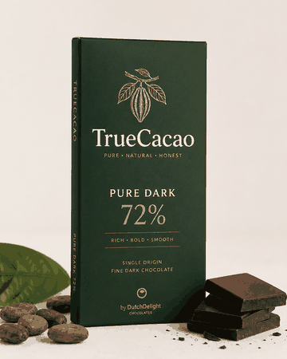
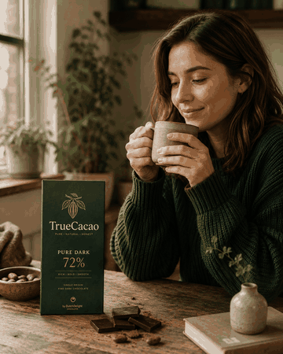
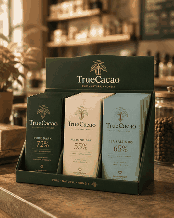

TrueCacao Bars
Pure Dark 72%, Almond Oat en Sea Salt Nibs. Repen met een natuurlijke uitstraling voor bewuste retail.
TrueCacao — by DutchDelight Chocolates
TrueCacao is ontwikkeld voor bewuste verkoopkanalen die een natuurlijke uitstraling en heldere productkeuzes belangrijk vinden.


Pure Dark 72%, Almond Oat en Sea Salt Nibs. Repen met een natuurlijke uitstraling voor bewuste retail.
Pure Bites, Nut & Nib Bites en Tasting Bites voor kantoor, koffiebars en proefmomenten.

Discovery Pack, Office Box en Retail Display voor cadeaupakketten, conceptstores en bedrijfscatering.
| Verkoopkanalen | Bio-retail, koffiebars, conceptstores, bedrijfscatering, kantooromgevingen en cadeaupakketten |
|---|---|
| Verpakking | Kraftlook, natuurlijke kleuren, rustige typografie, retaildisplays en office boxes |
| Doelgroep eindgebruikers | Bewuste consumenten, young professionals, flexitariërs en vegan shoppers |
| Koopmotief | Bewuste uitstraling, natuurlijke presentatie, duidelijke productinformatie en passend schapbeeld |
| Promotie | Productproeverijen, koffiemomenten, content over ingrediënten en retailintroducties |